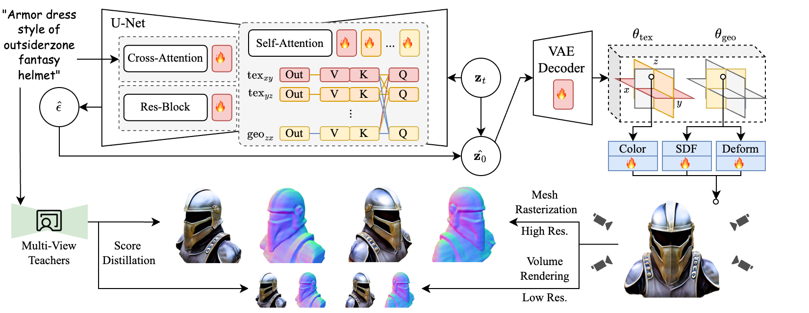

@article{ma2025progressive,
title={Progressive Rendering Distillation: Adapting Stable Diffusion for Instant Text-to-Mesh Generation without 3D Data},
author={Ma, Zhiyuan and Liang, Xinyue and Wu, Rongyuan and Zhu, Xiangyu and Lei, Zhen and Zhang, Lei},
booktitle={Proceedings of the IEEE/CVF conference on computer vision and pattern recognition},
year={2025}
}Method
Progressive Rendering Distillation

We detail our proposed training scheme for adapting SD as a native 3D generator. Traditional adaptation approaches require preparing ground-truth 3D representations and their corresponding latents for each 3D sample in the dataset. However, this paradigm faces limitations in both the quantity and quality of available 3D representations, as existing 3D datasets lack sufficient high-quality data for training text-to-3D generators.
Pretrained SD models already possess denoising capabilities for image generation. Our goal is to modify the Markov chain by transforming SD's U-net and decoder into 3D generators, from which the 3D representations can be decoded. Our modification of the Markov chain differs from traditional diffusion model adaptation objectives, as it requires neither ground-truth latents nor their noise-diffused variants in the training process.
At the beginning of the Markov chain, the network takes random noise as input. At each step, the current state is used to estimate latent vector, which is then decoded to 3D output. The 3D output is used to render images at different camera views and receive supervision from multi-view teachers via score distillation. We name this training scheme Progressive Rendering Distillation (PRD). From the total timesteps, we select a decreasing sequence of timesteps to perform score distillation from multi-view teachers. This specialized gradient detachment strategy maintains good convergence while reducing GPU memory usage and preventing gradient explosion.
Parameter-Efficient Triplane Adaptation and Distillation

We demonstrate an exemplar solution using Triplanes as the representation. We denote our adapted model as TriplaneTurbo. Specifically, TriplaneTurbo adapts SD to generate a 3D representation consisting of two Triplanes: a geometry Triplane storing Signed Distance Function (SDF) and deformation values for mesh extraction, and a texture Triplane containing RGB attributes for painting texture on the mesh.
Unlike existing works that fully retrain SD, which can lead to catastrophic forgetting, we propose a parameter-efficient adaptation approach. The core of our design lies in the fact that each of the six feature planes maintains its own unique feature distribution. Therefore, plane-specific characteristics must be incorporated into the adaptation process. We name our approach Parameter-Efficient Triplane Adaptation (PETA).
For the convolution blocks and cross-attention layers, we implement LoRA for parameter-efficient adaptation, and process the six planes uniformly. The plane-specific adaptations are then applied to the self-attention. For the self-attention blocks, we apply distinct LoRA layers to the linear layers when processing each of the six feature planes. This adaptation maintains low computational overhead while effectively introducing plane-specific processing. While this adaptation adds only 2.5% of the parameters to the SD model, it effectively enables native 3D generation.
Since PRD eliminates the need for 3D data by referring to multi-view teachers for distillation, using multiple teachers allows us to combine their strengths while mitigating individual biases. We integrate Stable Diffusion for its high-fidelity, text-consistent images, MVDream for addressing the Janus problem, and RichDreamer for providing direct supervision on geometry through normal and depth maps.